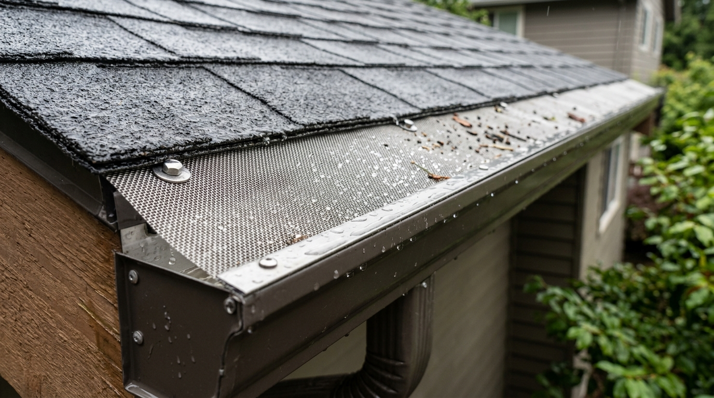
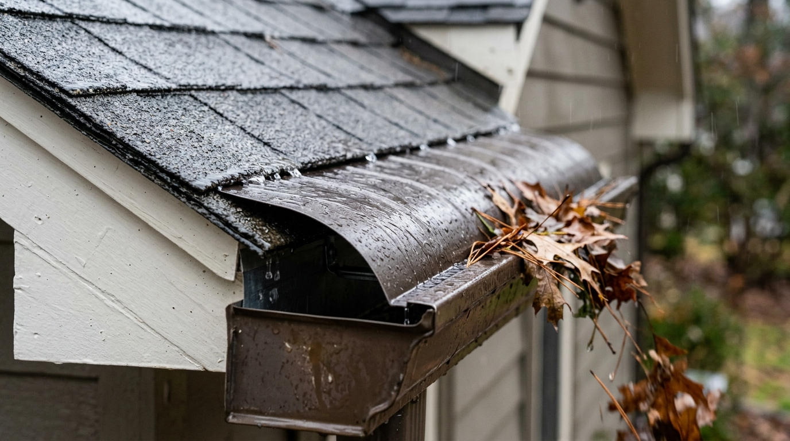
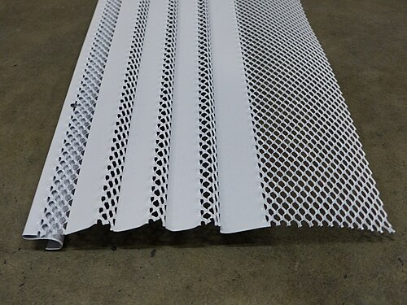
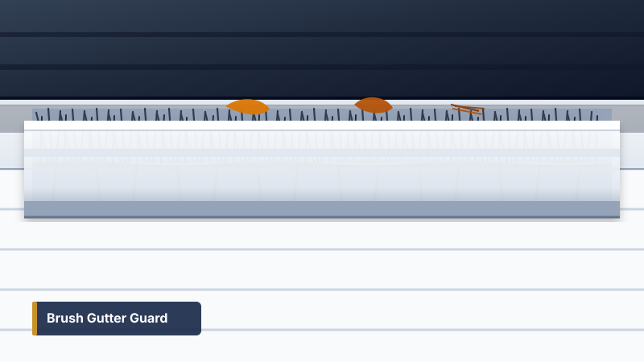

Gutter Guard Installation in Cartersville, GA
Your Local Gutter Guard Installation Company in Cartersville, GA
Protecting Bartow County homes from overflow, wood rot, and foundation damage. Written estimates. No pressure. Local crew.
Tired of Climbing That Ladder Every Few Months?
Most Cartersville homeowners clean their gutters at least twice a year. A lot of them do it three times, because the sweetgum seed pods that fall along Grassdale Road NW and through the West End neighborhood are relentless from September through November. Add in white oak leaves, loblolly pine needles from the treeline near Red Top Mountain State Park, and the fact that Cartersville gets around 48 inches of rain annually across more than 131 rainy days, and open gutters simply cannot keep up on their own.
Gutter guards do not make your gutters maintenance-free. What they do is cut your cleaning time from twice a year down to one quick check, and take the dangerous ladder work mostly out of the picture.
No More Dangerous Ladder Climbs Over Wet Rooflines
Falls from ladders send more than 500,000 Americans to the emergency room every year, according to the American Academy of Orthopedic Surgeons. Cartersville's wet winters from December through March make rooflines and fascia boards slippery and unpredictable.
Protect Your Foundation and Basement from Water Damage
When gutters overflow, water pools at the base of your home. Foundation repair in Bartow County can run $5,000 to $15,000 or more, according to HomeAdvisor. A gutter guard costs a fraction of that.
Stop Wood Rot and Fascia Damage Before It Starts
Standing water in a clogged gutter sits against your fascia board for days after a storm. Wood rot starts faster than most homeowners expect in Cartersville's humid summers where July highs hit 88 to 89 degrees Fahrenheit.
Stop Overflow Stains on Your Siding and Brickwork
Overflowing gutters leave dark streaks down brick and vinyl siding. For homeowners in Old Town Historic District on Main Street, where homes date back over a century, masonry staining is both an aesthetic and a long-term preservation problem.
Stop Water from Destroying Your Landscaping and Soil
When water pours over the edge of a clogged gutter, it hits the ground in one concentrated stream. That erodes soil, kills plants, and creates low spots next to your foundation. Homeowners near the Etowah River corridor and around Dellinger Park see this every spring.
Why Cartersville Homes Need Gutter Guards
Cartersville sits in the Piedmont region of Georgia, in the foothills of the Appalachian Mountains, about 45 miles northwest of Atlanta. The city gets around 48 inches of rain per year spread across more than 131 rainy days, with July averaging the most rain days at 14 or more per month. Winter brings a different problem. From December through March, temperatures regularly drop below 40 degrees Fahrenheit, creating freeze and thaw cycles that crack caulked seams and loosen gutter hangers.
The tree cover across Bartow County is one of the heaviest in North Georgia. Sweetgum trees drop spiky seed pods that pack tightly into standard gutters and slip through cheap screen guards. Southern red oak and white oak drop leaves that compact when wet. Loblolly and shortleaf pine drop needles that mat together and hold moisture. For homes near Georgia Highlands College on Hwy 20 or out toward Pettit Environmental Preserve, this combination of rain and debris is exactly what gutter guards are built to handle.
Are gutter guards worth it for homes in Cartersville, GA?
Yes. Cartersville's 48 inches of annual rainfall and its heavy sweetgum, pine, and oak tree cover create the exact conditions where gutter guards pay for themselves. The alternative is cleaning gutters two to three times a year, or risking overflow damage to your foundation, fascia, and landscaping.
Types of Gutter Guards We Install in Cartersville

Micro-Mesh Gutter Guards
Micro-mesh guards use a stainless steel mesh with openings small enough to block sweetgum seed pods, pine needles, and shingle grit. This is the highest-performing option for Cartersville homes surrounded by mixed tree cover. The mesh is corrosion-resistant and heavy-gauge, built to handle the humidity and temperature swings from Cartersville's 99-degree summer highs to its winter lows near 31 degrees Fahrenheit. Typical lifespan runs 15 to 20 years or more.
Do gutter guards really work with pine needles and oak leaves?
Micro-mesh guards are the only type that reliably blocks pine needles. Standard screen guards let needles slide through. If your home sits near pine trees, micro-mesh is the right call for Cartersville conditions.

Reverse-Curve Leaf Guards
Reverse-curve guards work by directing water around a curved surface and into the gutter through a narrow slot, while debris slides off the front. They work best on K-style gutters, which are the most common profile found on Cartersville homes built after 1980. Installation requires exact pitch and placement. A bad install sends water sheeting off the front instead of in.

Screen and Mesh Gutter Covers
Screen guards sit over the top of the gutter opening and block large debris like leaves and twigs. They work well for homes with oak tree cover but are less effective with pine needles. Available in aluminum and galvanized steel, and in colors that match your home's exterior trim, including black gutters popular on newer homes in Waterford and Oakland Heights.
Foam Gutter Inserts
Foam inserts fit inside the gutter channel and let water filter through while blocking debris on top. No fasteners, easy to install. The drawback is that sweetgum seed pods and pine needles can rest on top and hold moisture, which can degrade the foam faster in Cartersville's wet climate. Typical lifespan is 3 to 7 years.

Brush Gutter Guards
Brush guards are cylindrical bristle inserts that sit inside the gutter. Large debris collects on the bristles while water flows through. They are the easiest to install and the most affordable option. They need occasional brushing to remove buildup, especially under heavy sweetgum drop seasons in October and November.
What Does Gutter Guard Installation Cost in Cartersville, GA?
How much does gutter guard installation cost in Cartersville, GA?
Professional gutter guard installation in Cartersville typically runs between $3,000 and $6,000 for a full home, based on 150 to 200 linear feet of gutters at an average of $16 per linear foot installed, according to This Old House's 2025 cost survey. Material-only DIY installation runs $1,250 to $1,550 for the same footage. Cost varies by guard type, roof pitch, and number of stories.
Material Cost Per Linear Foot by Guard Type
| Guard Type | Material Cost Per Foot | Professional Install | Typical Lifespan |
|---|---|---|---|
| Foam Inserts | $6.31 | $14-16/ft | 3-7 years |
| Screen/Mesh | $7.50 | $15-17/ft | 10-15 years |
| Micro-Mesh Best Value | $7.53 | $15-18/ft | 15-20+ years |
| Brush Guards | $7.66 | $15-17/ft | 5-10 years |
| Reverse-Curve | $7.78 | $16-18/ft | 20+ years |
Source: This Old House 2025 Gutter Guard Cost Survey
We give a written, itemized quote before any work starts. No surprise charges once we are on the ladder.
DIY vs. Professional Gutter Guard Installation in Cartersville
DIY Installation
Foam and brush guards are straightforward DIY installs. You slide them in, no fasteners, no cutting. If you are comfortable on a ladder for a single-story home in Summer Hill or North Towne, these are manageable weekend jobs.
Professional Installation
Micro-mesh and reverse-curve guards are a different situation. They need to be fitted under the shingle edge or clipped precisely to the gutter lip. If the angle is off, water overshoots the gutter during a heavy July storm and pours straight down your siding. For two-story homes, steep rooflines, or homes with K-style and half-round gutter profiles, professional installation is the safer call.
Will Home Depot install gutter guards?
Home Depot sells DIY gutter guard kits, and their installation services vary by location. They do not specialize in gutter guard installation the way a dedicated local contractor does, and national installation services typically charge premium prices for the same job a local crew handles at a fair rate.
How We Install Gutter Guards: Our 6-Step Process
Assessment
We look at your gutters, your roofline, and the tree cover around your property. We tell you which guard type fits your situation and your budget before anything else happens.
Cleaning
We clean your gutters completely before installation. Guards go on clean gutters only.
Repair
Sagging sections, loose hangers, bad pitch, clogged downspouts. We fix these before the guard goes on. A guard over a broken gutter just covers the problem.
Measuring and Cutting
Guards are measured and cut to your exact gutter runs, including corners and valleys.
Installation
Guards are fitted, clipped, or fastened depending on type. We use methods that do not compromise your roofing warranty.
Water Test and Cleanup
We run water through the system before we leave. We clean up everything before we go.
Clean, Inspect & Precision Install
We never rush or install guards over clogged or unpitched gutters. Every system is hand-cleared, pitch-adjusted, securely fastened, and water-flow tested.

Cleaned Before Install
Precision Fitted Guards
How long does gutter guard installation take in Cartersville?
Most single-story homes in Bartow County take 2 to 4 hours. Two-story homes or homes with complex rooflines take 4 to 6 hours. Most jobs are done in one day.
How We Compare to LeafFilter, LeafGuard, and Gutter Helmet
National gutter guard brands like LeafFilter, LeafGuard, and Gutter Helmet operate on a franchise model. Their salespeople work on commission, their prices are typically quoted high, and their installation crews are not always local to Bartow County.
What is the lawsuit against LeafFilter?
LeafFilter has faced class action lawsuits related to installation damage and sales practices. Complaints filed with the Better Business Bureau include reports of water damage, improper installation, and difficulty reaching customer service after the sale. We are not affiliated with any of these national brands. We are a local company with a local reputation to protect.
We offer honest pricing, a written estimate, and a transferable warranty. That warranty stays with your home when you sell it, which matters when Cartersville's median home value sits around $274,000 to $298,000.
Common Gutter Problems We Fix Before Installing Guards
Why does rain run over my gutter guards?
The most common reason is improper gutter pitch. If your gutters are not sloped correctly toward the downspout, water sits and eventually overflows regardless of what guard is on top. We check and correct pitch before installation. We also look for loose hangers, rusted seams on older galvanized steel gutters, and clogged downspouts that back up the whole system.
What Are the Downsides of Gutter Guards?
Is there a downside to gutter guards?
Yes, and any company that tells you otherwise is overselling. No gutter guard eliminates maintenance completely. Fine debris like pine pollen and shingle grit settles on top of mesh guards over time. Foam and brush guards need periodic replacement. Reverse-curve guards can send water overshooting the gutter during very heavy downpours if not installed at the right angle. The honest answer is that guards reduce your maintenance significantly, they do not end it. One inspection per year keeps the system working the way it should.
Gutter Guard Maintenance and Warranty
Will gutter guards still need cleaning?
Yes, occasionally. Micro-mesh and reverse-curve guards need the least attention, typically one light rinse or inspection per year. Foam and brush guards need more frequent checks. In Cartersville, October through December is the heaviest debris season because of sweetgum and oak drop. We recommend one inspection in January after the main drop is done.
Our installation comes with a 10-year workmanship warranty. Manufacturer warranties vary by guard type and brand. We walk you through exactly what is covered before the job starts. Our warranty is transferable, which protects your investment if you sell your home.
Which Gutter Guard Is Right for Your Cartersville Home?
| Your Situation | Best Option |
|---|---|
| Heavy sweetgum and pine tree cover | Micro-mesh |
| Older home with half-round gutters in Old Town or Atco | Reverse-curve or micro-mesh |
| Tight budget, willing to check annually | Brush or screen |
| Two-story home, steep roof pitch | Professional micro-mesh install |
| Short-term ownership or rental property | Foam or brush |
Still not sure? That is what the free estimate is for. We look at your roofline, your tree cover, and your gutters, and we tell you straight what fits.
Gutter Guard Installation FAQs
Serving Cartersville, Emerson, Euharlee, Adairsville, White, Kingston, and Stilesboro
We install gutter guards throughout Bartow County and the surrounding area. Our primary service area covers Cartersville's neighborhoods including Old Town Historic District, Waterford, Oakland Heights, Atco, North Towne, Grassdale, West End, and Summer Hill. We also serve Emerson, Euharlee, White, Adairsville, Kingston, Cassville, and Stilesboro. Our secondary service area extends to Canton, Dallas, Calhoun, and Rockmart.
If you are off Exit 288 on I-75 near Cartersville, out on US-41 toward Adairsville, on SR-20 near Georgia Highlands College, or anywhere in the 30120 or 30121 ZIP codes, we cover you.
Get Your Free Gutter Guard Estimate in Cartersville, GA
We come out, look at your gutters, and give you a written estimate before any work starts. No pressure. No sales pitch. Just honest advice from a local crew that works in Bartow County every day.
Request Your On-Site Estimate
Written estimates within 24 hours. No obligation.